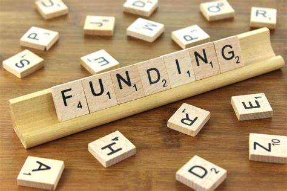

From microbiomes to music, children's play to infection transmission, we're backing early-career researchers to explore what healthy buildings really means.

What makes a building healthy? It's more than ventilation and insulation. It's how spaces shape immune systems, how acoustics foster belonging, how design supports children's resilience, how infection moves through rooms.
We've awarded £6,000 across four ECR-led projects, each bringing a fresh, cross-disciplinary lens to healthy buildings research. All four will run events in Spring 2026, open to researchers, practitioners, and communities.
"These projects show the breadth of what healthy buildings can mean. We're not just funding research; we're building a community that thinks differently about indoor environments."
Lead: Dr Rodrigo Juarez (School of Civil Engineering)
How can green spaces and building design support children's health, resilience, and everyday experiences? This one-day seminar combines academic insight with community voices and playful design activities, co-produced with Playful Anywhere.
Expect interactive sessions, creative workshops, and actionable recommendations for healthier, nature-connected urban futures.
With: Dewi Anwar, Yanya Tan, Karen Arzate Quintanilla, Yue Che, Joanne Michael
Lead: Dr Suparna Mitra (Leeds Institute of Medical Research)
The air inside buildings isn't sterile, it's full of microbes. But which ones help us, and which ones harm? This workshop brings together experts in microbiology, engineering, architecture, and public health to explore how indoor microbiomes influence health and wellbeing.
Participants will co-develop ideas for low-cost microbial sensing, ventilation strategies, and healthier indoor environments adding a crucial biological dimension to healthy buildings research.
With: Dr Paula Avello Fernandez, Dr Hema Viswambharan
Lead: Dr Lijun Zhang (Faculty of Management and Organisation)
How can sound shape our sense of belonging in shared spaces? This creative workshop explores acoustic design and community wellbeing, using participatory methods to co-design music spaces that foster inclusion.
The event combines research insights with hands-on activities, producing practical guidance for healthier, more inclusive environments.
With: Prof. Lynda Song, Dr Aiqin Liu, Dr Xunnan Li
Co-PI, Xiaoxuan Qin (School of Civil Engineering) and Marcus Marshall (School of Mathematics)
How does infection move through indoor environments — and how can buildings reduce the risk? This mini-symposium tackles multi-route transmission, integrating perspectives from engineering, microbiology, and behavioural science.
Through talks, poster sessions, and structured discussions, participants will identify research gaps and co-create strategies for reducing infection risks in buildings.
With: Marcus Marshall (School of Mathematics)
Engineering meets microbiology meets music meets behavioural science.
Working with communities, practitioners, and stakeholders — not just studying them.
Recommendations, guidance, and tools — not just papers.
Investing in the next generation of healthy buildings researchers.
All four projects will host events in Spring 2026, open to researchers, practitioners, and communities. Join the network to hear when registration opens.